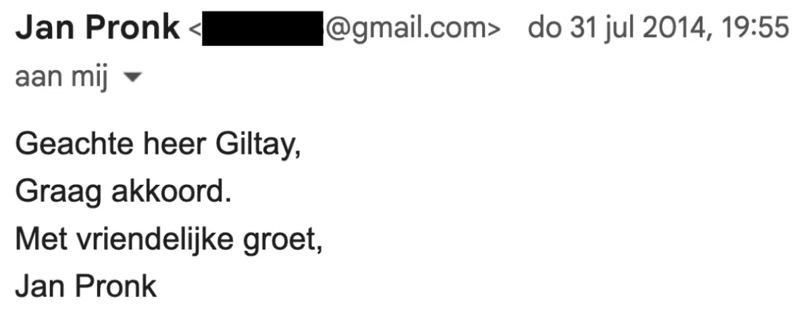
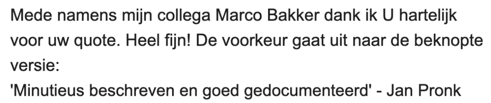

Exhibit · Email
Jan Pronk to Giltay, 31 July 2014
Pronk’s reply is at the top of the thread, the proposal it answers below it.
Jan Pronk’s agreement
“Dear Mr Giltay, Happy to agree. Kind regards, Jan Pronk” Page 1, at the top of the thread: Pronk’s reply of Thursday 31 July 2014, 19:55, sent from his iPad. The four lines are run on here. Translated from the Dutch; the original wording is below.
“Geachte heer Giltay, Graag akkoord. Met vriendelijke groet, Jan Pronk” Original wording

The proposal Pronk agreed to
“Also on behalf of my colleague Marco Bakker I thank you warmly for your quote. Much appreciated! The preference is for the concise version: ‘Meticulously written and well documented’ - Jan Pronk” Page 1, Giltay’s message of 10:50 that morning, quoted below Pronk’s reply. Giltay sets the endorsement in single quotation marks. Translated from the Dutch; the original wording is below.
“Mede namens mijn collega Marco Bakker dank ik U hartelijk voor uw quote. Heel fijn! De voorkeur gaat uit naar de beknopte versie: ‘Minutieus beschreven en goed gedocumenteerd’ - Jan Pronk” Original wording

Why this document matters
On 31 July 2014 Giltay put the concise version of the endorsement, ‘Meticulously written and well documented’, to Jan Pronk, the former Minister who took political responsibility for the failure of the Dutch UN mission in Srebrenica, and Pronk answered the same evening: “Happy to agree.” The words the site quotes were approved four months before the first edition appeared in November 2014. The essay states that even before it appeared, the book had won support from an unimpeachable quarter.
Provenance
- Document
- One-page screenshot of an email thread in Gmail, filed under the label [Gmail]/Alle berichten
- From
- Jan Pronk, former Minister for Development Cooperation and UN diplomat; his email address is blacked out in the screenshot apart from the gmail.com domain
- To
- Edwin Giltay
- Date
- Thursday 31 July 2014, 19:55, in reply to Giltay’s message of 10:50 that morning, which is quoted beneath it
- Subject
- Re: Voorwoord voor het boek De doofpotgeneraal (Re: Foreword for the book De doofpotgeneraal)
- Language
- Dutch
- Source
- dedoofpotgeneraal.
nl/ doc/ pronk.pdf
Cited in:
- the essay ‘The Ban Fell, the Book Stood’ in the chapter (5) ‘More Than a Banned Book’
- the Voices section.
Document: https://
Last modified 13 September 2026, accessed 3 October 2026.

This page is an exhibit to the book The Cover-up General by Edwin Giltay and its accompanying website.